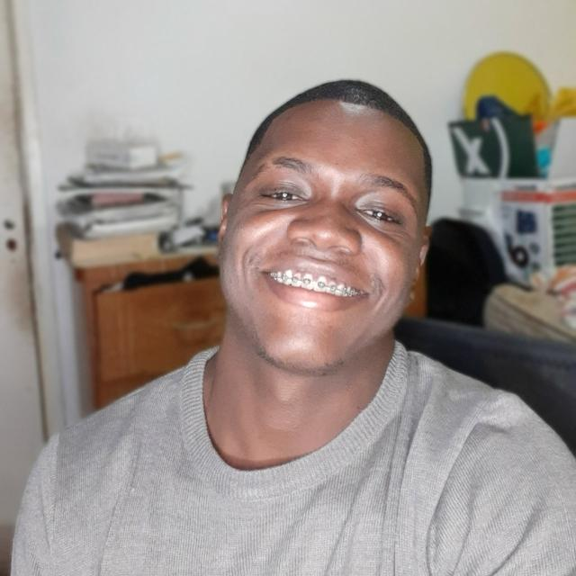

{ Alec Lima }
Front-End Developer
Front-End Developer
ü뮂Äçüíª Programador front-end, graduado em Assistente Administrativo.
‚è∞ Dedico meu tempo atualmente para o aperfei√ßoamento do meu ingl√™s, al√©m de aplicar todo o conhecimento adquirido de programa√ß√£o em projetos pr√°ticos focados na resolu√ß√£o de problemas reais que as pessoas enfrentam no cotidiano, como os que est√£o no meu GitHub.üëî Gosto muito de empreendedorismo, e para me inspirar, assisto filmes, leio livros, vejo s√©ries e escuto podcasts sobre grandes CEO's de empresas de tecnologia.
Ver o que essas pessoas passaram me faz entender que eu s√≥ estou em uma etapa diferente da deles, isso me mant√©m muito focado ao longo da trajet√≥ria :Düëãüëã Fico muito feliz que voc√™ tenha lido at√© aqui, se quiser saber mais sobre mim acesse os links abaixo...
- Github: https://github.com/AlecLimaDev - Email: aleclimadev@gmail.com